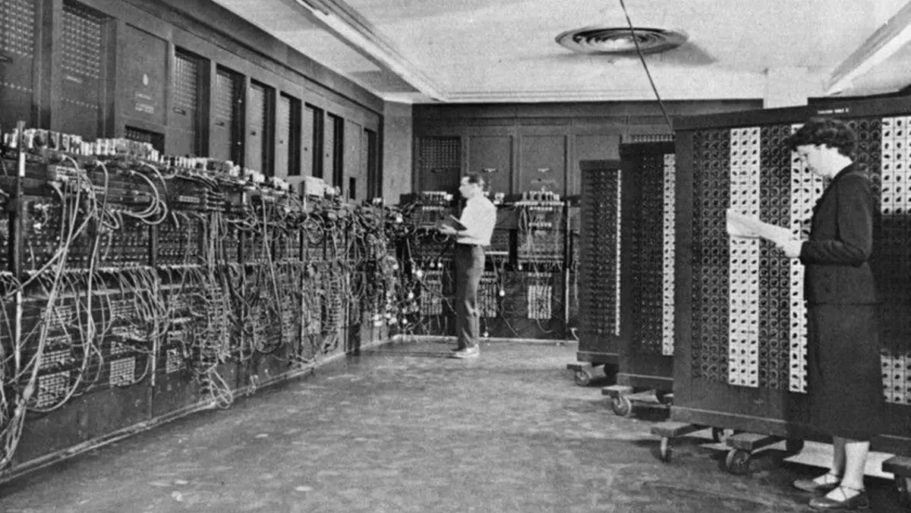

La historia de las computadoras es el relato de cómo el ser humano ha desarrollado herramientas cada vez más avanzadas para procesar información, resolver problemas y automatizar tareas. Desde los primeros dispositivos mecánicos, como el ábaco en la antigüedad, hasta las modernas supercomputadoras y sistemas basados en inteligencia artificial, la evolución de la informática ha transformado radicalmente la sociedad.
Su desarrollo se divide en varias generaciones, cada una marcada por un avance tecnológico clave: el uso de tubos de vacío, transistores, circuitos integrados y microprocesadores. A lo largo de este camino, las computadoras pasaron de ocupar habitaciones enteras y realizar cálculos básicos, a ser portátiles, veloces, con gran capacidad de almacenamiento y conexión global a través de internet.
Comprender esta evolución no solo nos ayuda a valorar los logros tecnológicos alcanzados, sino también a reflexionar sobre el futuro de la computación y su impacto en todos los aspectos de la vida humana.
